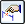

Calculate a target value by goal seeking
The Goal Seek command is one of the calculation tools available for engineering problem solving. It is available in the 3D environments and while drawing 2D geometry on a 2D Model sheet, a drawing sheet, a profile, or a sketch.
This procedure assumes you have dimensioned geometry and created area objects that are ready to use with the Goal Seek command. If not, see the Basic goal seeking workflow section in the Goal Seek command topic.
-
Choose Inspect tab→Evaluate group→Goal Seek
 .
. -
Identify the Goal Variable that you want to modify or calculate using either of the following methods. You may want to use the graphical method of selecting a variable when the list of variables in the Variable Table is long and not well documented.
To identify a Goal Variable
Do this
From a list
On the Goal Seek command bar, from the Goal list, select a variable.
Graphically
-
On the command bar, click the Click Goal Variable button

adjacent to the Goal list. -
Click a dimension in the active window.
Only eligible dimensions can be selected.
Tip:To reveal the variable name or formula associated with a dimension, right-click the dimension and choose one of these commands: Show All Variables or Show All Formulas.
Tip:Only driven, or dependent, variables and dimensions can be selected as the goal. The value of a driven variable or dimension is controlled by the element it refers to, or by a formula or variable you define.
-
-
In the Target box, type the value (but not the units) that you want the goal to attain and press the Tab key.
-
Identify the variable you want to change using either of the following methods.
To identify the Variable To Change
Do this
From a list
On the command bar, from the Variable list, select a variable.
Graphically
-
On the command bar, select the Click Change Variable button adjacent to the Variable list.
-
Click a dimension in the active window.
Only eligible dimensions can be selected.
Tip:To reveal the variable name or formula associated with a dimension, right-click the dimension and choose one of these commands: Show All Variables or Show All Formulas.
Tip:-
Only driving variables and dimensions can be selected as the change variable. The value of a driving variable or dimension controls the size, orientation, or location of an element.
-
The value of the selected goal must depend upon the variable or dimension you selected as the variable to be changed.
-
-
On the command bar, click the green check mark to begin.
When the goal seek process finishes, the graphic window updates with the changes to geometry and dimensions. The process duration and number of iterations are displayed on the status bar.
Tip:To change the process duration or number of iterations, click the Options button on the command bar and then modify the settings in the Goal Seek Options dialog box.
-
To find another solution using the same variables, change the Target and then click the green check mark to reprocess.
Tip:-
To learn about the entire goal seeking workflow, from drawing to solving 2D geometry, see the Basic goal seeking workflow section in the Goal Seek command topic.
-
For an example of how goal seeking can be applied to a 3D model, see Reduce the weight of a part with goal seeking.
-
For more information about how to use the Goal Seek command successfully, see Best practices in goal seeking.
-